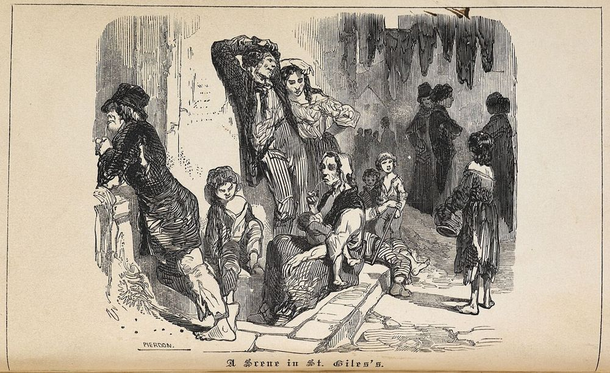

1Dev fıçılar çağı
1800'lerin başında Londra'da en sevilen içkilerden biri, koyu renkli bir bira türü olan porter'dı. Büyük bira fabrikaları birbiriyle yarışıyor, dev ahşap fıçılar yaptırıyordu. Bu fıçılar hem üretim kapasitesinin hem de prestijin göstergesiydi.
Meux & Co'nun Horse Shoe adlı bira fabrikası, Londra'nın merkezinde, bugün Tottenham Court Road'un bulunduğu yerdeydi. Fabrikada 6,7 metre yüksekliğinde, demir çemberlerle sıkılmış dev ahşap mayalanma fıçıları vardı.
217 Ekim 1814: Fıçı patlıyor
O gün öğleden sonra bir işçi, büyük fıçılardan birini saran demir çemberlerden birinin koptuğunu fark etti. Durumu amirine bildirdi ama ona bunun önemli olmadığı söylendi. Yaklaşık bir saat sonra fıçı tamamen patladı.
Fışkıran birahın basıncı yandaki bir başka kazanın vanasını kopardı ve birkaç fıçı daha parçalandı. Kaynaklara göre toplamda 580.000 ile 1.470.000 litre arasında bira serbest kaldı. Bira dalgası fabrikanın arka duvarını yıktı ve sokağa taştı.

3Yoksul mahalle sular altında
Fabrikanın hemen arkasında St Giles adlı, Londra'nın en yoksul ve kalabalık mahallelerinden biri vardı. Pek çok aile bodrum katlarda yaşıyordu. Bira dalgası bu bodrumlara doldu.
Sekiz kişi hayatını kaybetti. Bunlardan beşi, bir gün önce ölen iki yaşındaki bir çocuk için düzenlenen yas toplantısına katılan kadınlardı. Bir başka kurban, annesiyle çay içmekte olan küçük bir kızdı.
4Sonrası
Olayla ilgili soruşturmada jüri, ölümlerin 'kaza sonucu' gerçekleştiğine karar verdi. Kimse suçlu bulunmadı. Bira fabrikası büyük bir maddi kayıp yaşadı ve iflasın eşiğine geldi. Ancak kaybedilen bira için daha önce ödediği vergiyi devletten geri alarak ayakta kaldı.
Bu felaketten sonra İngiliz bira endüstrisi dev ahşap fıçıları yavaş yavaş terk etti. Fabrikanın yerinde bugün Dominion Tiyatrosu bulunuyor.
💡 Biliyor muydun?
- Bazı popüler anlatımlarda insanların sokakta bira içmek için kap kacakla koştuğu söylenir. Ancak bu ayrıntının dönemin kaynaklarıyla doğrulanmadığı, sonradan eklenmiş olabileceği belirtiliyor.
- Fabrika 1921'de taşındı. Meux & Co şirketi 1961'de kapandı.
✅ Kaynaklar
📷 Görseller
- Kapak: Bilinmeyen yazar · Public domain · Wikimedia Commons
- 1850 civarında St Giles mahallesi: Pierdon · Public domain · Wikimedia Commons